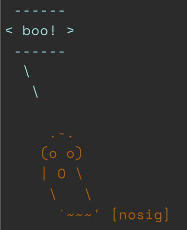
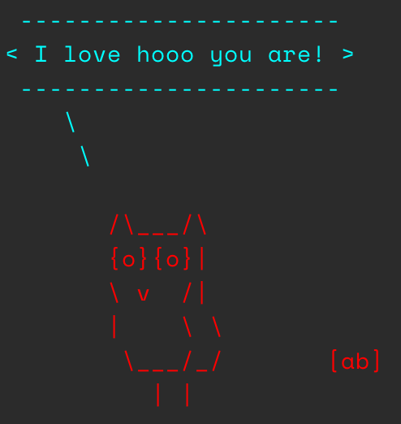
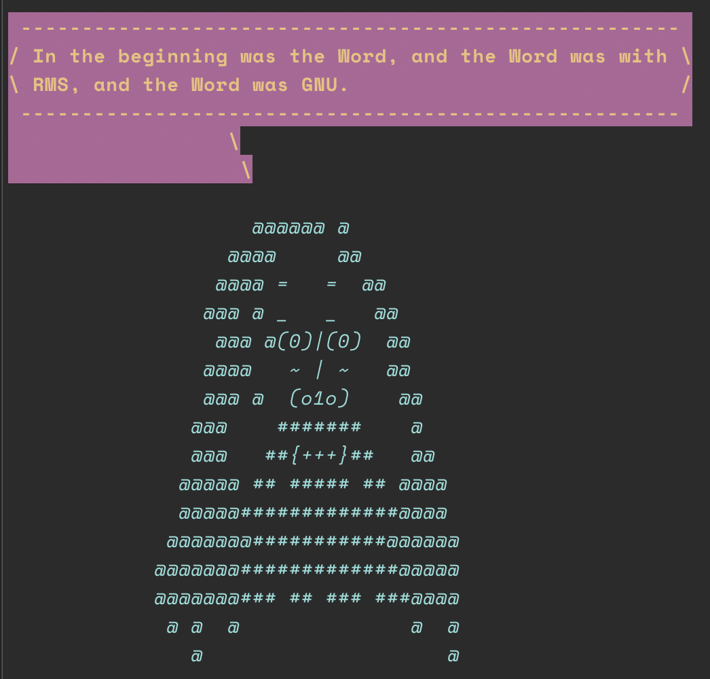
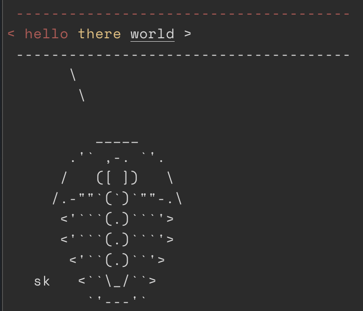

What is this?
If you are familiar with cowsay on the cli, then you know what this is, but for R. If not, read below. Why? Why not?
History
cowsay was originally written by Tony Monroe, with the first code released in 1999. The version of cowsay you get via homebrew is a fork by Andrew Janke at https://cowsay.diamonds/ (code repo). The code for the original can be found at tnalpgge/rank-amateur-cowsay and the original website can be seen on the Wayback Machine. Both the original and version by Janke are both written in Perl. The cowsay you get with apt on Linux machines is the last version Monroe released in 2016 (v3.0.4 or possibly v3.0.3).
This R package has some additional features the orginal cowsay doesn’t have, but also lacks some features the original has. This package doesn’t yet support custom eyes and tongue for the cow or any other animals.
Contributors (alphabetical)
- Amanda Dobbyn
- Andreas Brandmaier
- Andy Teucher
- Carson Sievert
- David Schoch
- Franz-Sebastian Krah
- Guangchuang Yu
- Karl Broman
- Kiyoko Gotanda
- Lucy D’Agostino McGowan
- Marion Louveaux
- Noam Ross
- Paolo Sonego
- Philipp Boersch-Supan
- Rich FitzJohn
- Scott Chamberlain
- Thomas Leeper
- Tyler Rinker
That’s right, it takes 18 people to make cowsay - it’s that hard.
Contributing
See CONTRIBUTING.md
Where to find ASCII animal art
Sources to look in:
- https://asciiart.website/ - again, this person only collects them - no mention of license, permissions, etc.
Permissions
In the ascii art mailing list https://groups.google.com/forum/#!forum/alt.ascii-art they say:
As for posting other people's ASCII art,
after a discussion in news:alt.ascii-art _ ___
the following rules were agreed upon: #_~`--'__ `===-,
1. If an ASCII ART picture has initials `.`. `#.,//
on it, leave them on when posting it ,_\_\ ## #\
2. If an ASCII ART picture doesn't have `__.__ `####\
initials on it, mention that you ~~\ ,###'~
didn't draw it when posting it. \##'
3. If somebody posts a picture without [nosig]
initials and you have an original copy
with initials on, feel free to re-post the original version.
* The re-post ought not to be taken personally, as we all
know that ASCII art often loses proper credits.
Responses to the re-post are not necessary.
One contributor, name of Krogg, suggested the following:
1.) Ultra polite:...ya make yer own ascii and use it.
2.) Very polite:...Ya contact the author and ask if ya
can use it...
3.) polite:...Ya use it but you keep the Credits
in there like they should be.
4.) rude:...Ya use it and strip credits.
5.) Very rude:...Ya use it and claim that it Is
_Your_ very own creation...So, let’s go with this rule: Let’s include found (on the web) ascii art in this pkg, include signature if there, and if no signature, put in a [nosig] (see above).
Quick watch start
Asciicast: https://asciinema.org/a/7745
Install
From CRAN
# install.packages("pak")
pak::pak("cowsay")Dev version
# install.packages("pak")
pak::pak("sckott/cowsay")The animals
sort(animals)
#> [1] "alligator" "ant" "anxiouscat" "bat" "bat2"
#> [6] "beavis" "behindcat" "bigcat" "blowfish" "buffalo"
#> [11] "cat" "chicken" "chuck" "clippy" "cow"
#> [16] "cow_borg" "cow_dead" "cow_greedy" "cow_sleepy" "cow_tired"
#> [21] "cow_wired" "cow_young" "daemon" "dragon" "duck"
#> [26] "duckling" "egret" "endlesshorse" "facecat" "fish"
#> [31] "frog" "ghost" "goldfish" "grumpycat" "hypnotoad"
#> [36] "longcat" "longtailcat" "monkey" "mushroom" "owl"
#> [41] "pig" "poop" "pumpkin" "rabbit" "shark"
#> [46] "shortcat" "signbunny" "smallcat" "snowman" "spider"
#> [51] "squirrel" "squirrel2" "stegosaurus" "stretchycat" "trilobite"
#> [56] "turkey" "whale" "wolf" "yoda"Say Something
say("time")
#>
#> ____________________________
#> < 2025-03-28 15:30:56.460987 >
#> ----------------------------
#> \
#> \
#>
#> ^__^
#> (oo)\ ________
#> (__)\ )\ /\
#> ||------w|
#> || ||
say("ain't that some shit", "chicken")
#>
#> ______________________
#> < ain't that some shit >
#> ----------------------
#> \
#> \
#> _
#> _/ }
#> `>' \
#> `| \
#> | /'-. .-.
#> \' ';`--' .'
#> \'. `'-./
#> '.`-..-;`
#> `;-..'
#> _| _|
#> /` /` [nosig]Add some color:
say("boo!", "ghost",
what_color = "cyan", by_color = "saddlebrown"
)

String styles together crayon-style:
say(
what = "rms", by = "rms",
what_color = yellow$bgMagenta$bold,
by_color = cyan$italic
)
This doesn’t preclude you from adding extra crayon colors to your what string directly - but the results are not super pretty:
say(
what = paste0("hello ", crayon::yellow("there "), crayon::underline("world")),
by = "trilobite"
)
Vary type of output, default calls message()
say("hell no!")
#>
#> __________
#> < hell no! >
#> ----------
#> \
#> \
#>
#> ^__^
#> (oo)\ ________
#> (__)\ )\ /\
#> ||------w|
#> || ||
say("hell no!", type = "warning")
#> Warning in say("hell no!", type = "warning"):
#> __________
#> < hell no! >
#> ----------
#> \
#> \
#>
#> ^__^
#> (oo)\ ________
#> (__)\ )\ /\
#> ||------w|
#> || ||
say("hell no!", type = "string")
#> [1] "\n __________ \n< hell no! >\n ---------- \n \\\n \\\n\n ^__^ \n (oo)\\ ________ \n (__)\\ )\\ /\\ \n ||------w|\n || ||"Catfacts!!!!
From the catfacts API at https://catfact.ninja
say("catfact", "cat")
#>
#> ________________________________________________________
#> < About 37% of American homes today have at least 1 cat. >
#> --------------------------------------------------------
#> \
#> \
#>
#> |\___/|
#> ==) ^Y^ (==
#> \ ^ /
#> )=*=(
#> / \
#> | |
#> /| | | |\
#> \| | |_|/\
#> jgs //_// ___/
#> \_)Long cat
From the a Boing Boing tweet on 2014-05-10 “twitter.com/BoingBoing/status/465170473194512384” (post may be gone)
say("it's caturday", "longcat")
#>
#> _______________
#> < it's caturday >
#> ---------------
#> \
#> \
#>
#> .ﾊ,,ﾊ
#> ( ﾟωﾟ)
#> |つ つ
#> | |
#> | |
#> | |
#> | |
#> | |
#> | |
#> | |
#> | |
#> | |
#> | |
#> | |
#> | |
#> | |
#> | |
#> | |
#> | |
#> | |
#> | |
#> U " U
#> [BoingBoing]Grumpy cat
say("NO!", by = "grumpycat")
#>
#> _____
#> < NO! >
#> -----
#> \
#> \
#>
#> ﾊ _ ﾊ
#> ಠ X ಠ
say("WOKE UP TODAY, IT WAS TERRIBLE", by = "grumpycat")
#>
#> ________________________________
#> < WOKE UP TODAY, IT WAS TERRIBLE >
#> --------------------------------
#> \
#> \
#>
#> ﾊ _ ﾊ
#> ಠ X ಠ
say("I HAD FUN ONCE, IT WAS AWFUL", by = "grumpycat")
#>
#> ______________________________
#> < I HAD FUN ONCE, IT WAS AWFUL >
#> ------------------------------
#> \
#> \
#>
#> ﾊ _ ﾊ
#> ಠ X ಠBunny Holding a sign
say(by = "signbunny")
#>
#> ______________
#> < Hello world! >
#> --------------
#> \
#> \
#>
#> (\__/) ||
#> (•ㅅ•) ||
#> / づ
#> [nosig]Fish
say(by = "fish")
#>
#> ______________
#> < Hello world! >
#> --------------
#> \
#> \
#>
#> ><((((º> ><((((º> ><((((º> ><((((º> ><((((º>
#> Kiyoko GotandaR fortunes
library(fortunes)
say("fortune", "cat")
#>
#> ________________________________________________________
#> / It is unusual for the actual data not to be available \
#> | in real problems. Brian D. Ripley in reply to a |
#> | question how to fit a distribution if not the data but |
#> \ only their histogram is available R-help June 2006 /
#> --------------------------------------------------------
#> \
#> \
#>
#> |\___/|
#> ==) ^Y^ (==
#> \ ^ /
#> )=*=(
#> / \
#> | |
#> /| | | |\
#> \| | |_|/\
#> jgs //_// ___/
#> \_)You can also pick a particular fortune by number or regex search - if the fortune parameter is not NULL you don’t have pass anything to the what parameter (the 1st parameter)
say(fortune = 100)
#>
#> _________________________________________________________
#> / I'm not sure I'd trust any computer recommendation from \
#> | 1976, no matter how famous the authors are. Peter |
#> | Dalgaard after Samuel Edward Kemp cited a |
#> | recommendation about nonlinear least squares computer |
#> \ programs from 'Box-Jenkins, 1976' R-help January 2005 /
#> ---------------------------------------------------------
#> \
#> \
#>
#> ^__^
#> (oo)\ ________
#> (__)\ )\ /\
#> ||------w|
#> || ||
say(fortune = "whatever")
#>
#> _________________________________________________________
#> / Justin: Is there a function that just does whatever I'm \
#> | thinking (aka whatever my homework question is...)? |
#> | Joshua Ulrich: That's the magic_pony function. Justin |
#> \ and Joshua Ulrich stackoverflow.com June 2013 /
#> ---------------------------------------------------------
#> \
#> \
#>
#> ^__^
#> (oo)\ ________
#> (__)\ )\ /\
#> ||------w|
#> || ||Trilobite
say("Hi there :)", by = "trilobite")#>
#> _____________
#> < Hi there :) >
#> -------------
#> \
#> \
#>
#> _____
#> .'` ,-. `'.
#> / ([ ]) \
#> /.-""`(`)`""-.\
#> <'```(.)```'>
#> <'```(.)```'>
#> <'``(.)``'>
#> sk <``\_/``>
#> `'---'`Shark
say("Q: What do you call a solitary shark\nA: A lone shark", by = "shark")
#>
#> ______________________________________________________
#> < Q: What do you call a solitary shark A: A lone shark >
#> ------------------------------------------------------
#> \
#> \
#>
#> /""-._
#> . '-,
#> : '',
#> ; * '.
#> ' * () '.
#> \ \
#> \ _.---.._ '.
#> : .' _.--''-'' \ ,'
#> .._ '/.' . ;
#> ; `-. , \'
#> ; `, ; ._\
#> ; \ _,-' ''--._
#> : \_,-' '-._
#> \ ,-' . '-._
#> .' __.-''; \...,__ '.
#> .' _,-' \ \ ''--.,__ '\
#> / _,--' ; \ ; \^.}
#> ;_,-' ) \ )\ ) ;
#> / \/ \_.,-' ;
#> / ;
#> ,-' _,-'''-. ,-., ; PFA
#> ,-' _.-' \ / |/'-._...--'
#> :--`` )/
#> 'Buffalo
say("Q: What do you call a single buffalo?\nA: A buffalonely", by = "buffalo")#>
#> ________________________________________________________
#> < Q: What do you call a single buffalo? A: A buffalonely >
#> --------------------------------------------------------
#> \
#> \
#>
#> _.-````'-,_
#> _,.,_ ,-'` `'-.,_
#> /) ( '``-.
#> (( ) ) `\
#> \) (_/ )\
#> | /) ' ,' / \
#> `\ ^' ' ( / ))
#> | _/\ , / ,,`\ ( "`
#> \Y, | \ \ | ````| / \_ \
#> `)_/ \ \ ) ( > ( >
#> \( \( |/ |/
#> mic & dwb /_(/_( /_( /_(Clippy
say(fortune = 59, by = "clippy")
#>
#> ________________________________________________________
#> / Let's not kid ourselves: the most widely used piece of \
#> | software for statistics is Excel. Brian D. Ripley |
#> | 'Statistical Methods Need Software: A View of |
#> | Statistical Computing' Opening lecture RSS 2002, |
#> \ Plymouth September 2002 /
#> --------------------------------------------------------
#> \
#> \
#>
#> _
#> / \
#> | |
#> @ @
#> || ||
#> || ||
#> |\_/|
#> \___/ GBYoda
say("fortune", by = "yoda")Bats!
say("hi, i'm a bat", by = "bat")
#>
#> _______________
#> < hi, i'm a bat >
#> ---------------
#> \
#> \
#>
#> __.--'\ \.__./ /'--.__
#> _.-' '.__.' '.__.' '-._
#> .' '.
#> / \
#> | |
#> | |
#> \ .---. .---. /
#> '._ .' '.''. .''.' '. _.'
#> '-./ \ / \.-'
#> ''mrfSee also bat2
Monkey!
say("fortune", by = "monkey")
#>
#> ________________________________________________________
#> / Duncan Murdoch: Others need to run under ESS. Francois \
#> | Pinard: While this is a good things for Emacs lovers, |
#> | the requirement is rather unwelcome for pagans! :-) |
#> | Duncan Murdoch and Francois Pinard on the availability |
#> \ of command completion R-help May 2006 /
#> --------------------------------------------------------
#> \
#> \
#>
#> .="=.
#> _/.-.-.\_ _
#> ( ( o o ) ) ))
#> |/ " \| //
#> \'---'/ //
#> jgs /`"""`\\ ((
#> / /_,_\ \\ \\
#> \_\_'__/ \ ))
#> /` /`~\ |//
#> / / \ /
#> ,--`,--'\/\ /
#> '-- "--' '--'Daemon!
say("fortune", by = "daemon")
#>
#> _______________________________________________________
#> / I wish <<- had never been invented, as it makes an \
#> | esoteric and dangerous feature of the language *seem* |
#> | normal and reasonable. If you want to dumb down R/S |
#> | into a macro language, this is the operator for you. |
#> \ Bill Venables R-help July 2001 /
#> -------------------------------------------------------
#> \
#> \
#> , ,
#> /( )`
#> \ \___ / |
#> /- _ `-/ '
#> (/\/ \ \ /\
#> / / | `
#> O O ) / |
#> `-^--'`< '
#> (_.) _ ) /
#> `.___/` /
#> `-----' /
#> <----. __ / __ \
#> <----|====O)))==) \) /====
#> <----' `--' `.__,' \
#> | |
#> \ /
#> ______( (_ / \______
#> ,' ,-----' | \
#> `--{__________) \/ [nosig]Egret
say("je ne regrette rien", by = "egret")
#>
#> _____________________
#> < je ne regrette rien >
#> ---------------------
#> \
#> \
#>
#> _,
#> -==<' `
#> ) /
#> / (_.
#> | ,-,`\
#> \\ \ \
#> `\, \ \
#> ||\ \`|,
#> jgs _|| `=`-'
#> ~~`~`See also bat2
Endless horse
With endless=FALSE cause we gotta compile the .md yo
endless_horse(endless = FALSE)
#>
#> ______________
#> < Hello world! >
#> --------------
#> \
#> \
#>
#> ,
#> _,,)\.~,,._
#> (()` ``)\))),,_
#> | \ ''((\)))),,_ ____
#> |6` | ''((\())) "-.____.-" `-.-,
#> | .'\ ''))))' \)))
#> | | `. '' ((((
#> \, _) \/ |))))
#> `' | (((((
#> \ | ))))))
#> `| | ,\ /((((((
#> | / `-.______.< \ | )))))
#> | | / `. \ \ ((((
#> | / \ | `.\ | (((
#> \ | | | )| | ))
#> | | | | || | ' [endless.horse]
#> | | | | || |Using pipes
library("magrittr")
"I HAD FUN ONCE, IT WAS AWFUL" %>% say("grumpycat")
#>
#> ______________________________
#> < I HAD FUN ONCE, IT WAS AWFUL >
#> ------------------------------
#> \
#> \
#>
#> ﾊ _ ﾊ
#> ಠ X ಠI just want the animals!
Okay, hold your endless horses. Just use the function animal_fetch() to select the animal you want by name.
animal_fetch("clippy")
#> [1] "\n _\n / \\\n | |\n @ @\n || ||\n || ||\n |\\_/|\n \\___/ GB"Meta
- License: MIT
- Please note that this project is released with a Contributor Code of Conduct. By participating in this project you agree to abide by its terms.